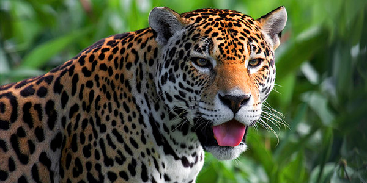

Le Jaguar
Caractéristiques Physiques
Le jaguar, scientifiquement nommé Panthera onca, est le plus grand félin des Amériques et le troisième plus grand félin du monde après le tigre et le lion. Les mâles peuvent mesurer entre 1,6 et 1,85 mètres de longueur, sans compter leur queue, qui ajoute environ 70 à 90 centimètres. Leur poids varie de 56 à 96 kg, bien que certains individus puissent dépasser les 100 kg. Les femelles sont généralement plus petites et plus légères. Le pelage du jaguar est distinctif, avec une base jaune doré ornée de rosettes noires, chaque rosette ayant un petit point au centre.
Habitat et Répartition
Les jaguars préfèrent les habitats denses et humides, tels que les forêts tropicales et subtropicales, mais on peut aussi les trouver dans des régions marécageuses, des forêts de feuillus sèches et même des zones de broussailles désertiques. Leur répartition historique s'étendait du sud des États-Unis jusqu'au nord de l'Argentine, mais leur aire de répartition actuelle est principalement concentrée en Amérique centrale et en Amérique du Sud, avec les plus fortes populations en Amazonie.
Comportement et Mode de Vie
Les jaguars sont des animaux solitaires et territoriaux, chaque individu parcourant de vastes territoires qu'il marque avec de l'urine et des griffures. Ils sont principalement nocturnes, chassant la nuit et se reposant pendant la journée. Les jaguars sont d'excellents nageurs et sont souvent trouvés près de l'eau. Leur régime alimentaire est varié et opportuniste, incluant des mammifères, des reptiles et des poissons. Ils utilisent leur puissance exceptionnelle et leur mâchoire forte pour capturer et tuer leurs proies, souvent en mordant directement à travers le crâne.